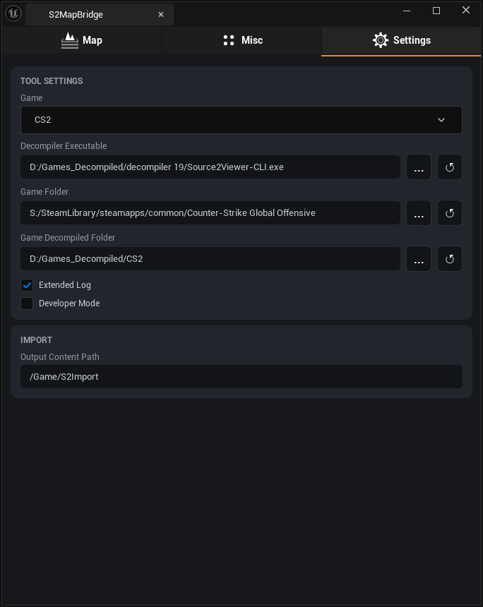
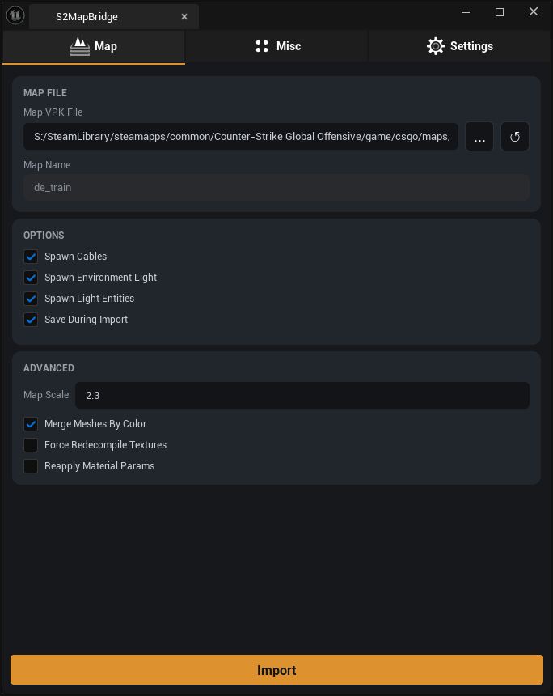
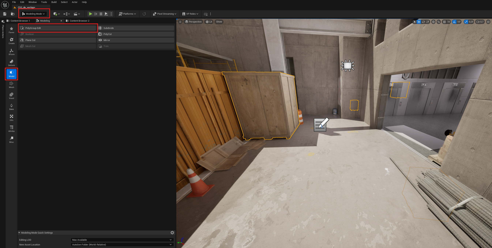

-
Декомпиляция уровней вместе со всеми связанными ассетами: мешами, текстурами, материалами и вспомогательными данными.
Decompiles levels with all linked assets: meshes, textures, materials and auxiliary data.
-
Нативный C++ импорт мешей напрямую из файлов
.vmesh_c/.vmdl_c— Blender не требуется.Native C++ mesh import directly from
.vmesh_c/.vmdl_cfiles — no Blender required. -
Импорт необходимых ассетов в Unreal Engine с автоматическим созданием материалов на основе данных исходной игры.
Imports assets into Unreal Engine and auto-creates materials based on Source 2 shader data.
-
Слияние draw call-ов с одинаковым материалом и цветом тинта в единый Static Mesh для оптимизации сцены.
Merges draw calls sharing the same material and tint color into a single Static Mesh to reduce actor count.
-
Импорт карт из игр на движке Source 2: Counter-Strike 2, Half-Life: Alyx и Dota 2.
Imports maps from Source 2 games: Counter-Strike 2, Half-Life: Alyx and Dota 2.
-
Автоматическая расстановка источников света, проводов и анимированных объектов на уровне.
Automatic placement of light entities, cables and animated objects in the level.
-
Нативный Slate UI с тремя вкладками: Map, Misc и Settings. Открывается прямо из тулбара PyToolkit.
Native Slate UI with three tabs: Map, Misc and Settings. Opens directly from the PyToolkit toolbar.
- Unreal Engine 5.6 или новееUnreal Engine 5.6 or later
- PyToolkit плагин версии 1.8 и выше (включает adenexlib_core 16+)PyToolkit plugin version 1.8 or later (includes adenexlib_core 16+)
- Установленная игра (Counter-Strike 2, Half-Life: Alyx или Dota 2)The game installed (Counter-Strike 2, Half-Life: Alyx or Dota 2)
- Утилита Source2Viewer CLI для декомпиляции файлов картыSource2Viewer CLI utility for decompiling map files
- Свободное место на диске (первый запуск может импортировать несколько тысяч текстур)Free disk space (the first run may import thousands of textures)

1. Установка PyToolkit1. Install PyToolkit
Скачайте и распакуйте плагин PyToolkit (версия 1.8 и выше) в папку Plugins движка или вашего проекта.
Download and unzip PyToolkit (version 1.8 or later) into the Plugins folder of your engine or project.
2. Установка S2MapBridge2. Install S2MapBridge
Распакуйте архив S2MapBridge в папку Plugins вашего Unreal Engine проекта (например, D:\YourProject\Plugins\S2MapBridge).
Unzip S2MapBridge into the Plugins folder of your Unreal Engine project (e.g. D:\YourProject\Plugins\S2MapBridge).
3. Включение плагинов3. Enable plugins
Запустите Unreal Engine и включите следующие плагины (Edit → Plugins): Launch Unreal Engine and enable the following plugins (Edit → Plugins):
- Editor Scripting Utilities
- Python Editor Script Plugin
- Sequencer Scripting
- Http Blueprint
- PyToolkit
- S2MapBridge
Перезапустите движок.Restart the engine.
4. Установка Source2Viewer CLI4. Install Source2Viewer CLI
Скачайте cli-windows-x64.zip, распакуйте в любое удобное место и укажите путь к .exe в настройках плагина.
Download cli-windows-x64.zip, unzip it anywhere and point the plugin Settings to the .exe.
5. Открытие интерфейса5. Opening the UI
После перезапуска движка в тулбаре PyToolkit появится кнопка S2MapBridge. Нажмите её, чтобы открыть панель импорта. After restarting the engine a S2MapBridge button will appear in the PyToolkit toolbar. Click it to open the importer panel.

Все настройки доступны на вкладке Settings.All settings are available on the Settings tab.
- Game — выбор игры Source 2 (CS2, HL: Alyx, Dota 2).select the Source 2 game to import from (CS2, HL: Alyx, Dota 2).
- Decompiler Executable — путь к
Source2Viewer-CLI.exe.path toSource2Viewer-CLI.exe. - Game Folder — корневая папка установленной игры (например
D:\Steam\steamapps\common\Counter-Strike Global Offensive).root installation folder of the game (e.g.D:\Steam\steamapps\common\Counter-Strike Global Offensive). - Game Decompiled Folder — папка, куда будут сохраняться декомпилированные файлы.folder where decompiled files will be stored.
- Extended Log — включить расширенный вывод логов (полезно при отладке).enable verbose per-asset logging (useful for troubleshooting).
- Developer — показывает кнопки запуска фаз по отдельности (Phase 1 / Phase 2 / Phase 3).shows individual phase buttons (Phase 1 / Phase 2 / Phase 3).
- Fallback Output Content Path — путь в Content Browser, куда попадают ассеты, которые не удалось сопоставить с картой.content path used for assets that cannot be matched to the map JSON.

Параметры вкладки MapMap tab parameters
- Map VPK File — путь к VPK-файлу карты (например,
.../csgo/maps/de_dust2.vpk). Нажмите...чтобы выбрать файл.path to the map VPK file (e.g..../csgo/maps/de_dust2.vpk). Click...to browse. - Map Name — внутреннее имя карты. Подставляется автоматически из VPK.internal map name. Filled in automatically from the VPK.
- Map Scale — масштаб импортируемой карты (по умолчанию 2.3 для перевода юнитов Source 2 в сантиметры UE).import scale (default 2.3 converts Source 2 units to Unreal centimetres).
- Spawn Cables — создавать кабели/провода на карте.spawn cable/rope entities in the level.
- Spawn Environment Light — создавать Sky Light и Directional Light из данных карты.create Sky Light and Directional Light from map data.
- Spawn Light Entities — создавать точечные и прожекторные источники света.spawn point lights and spot lights from the map.
- Save During Import — автоматически сохранять ассеты в процессе импорта.automatically save assets to disk during import.
- Merge Meshes By Color — объединять draw call-ы с одинаковым материалом и тинтом в один меш. Уменьшает число акторов на уровне.merge draw calls sharing the same material and tint into one mesh. Reduces actor count.
- Force Redecompile Textures — принудительно перекомпилировать текстуры, даже если они уже существуют.force redecompile all textures even if they already exist.
- Max Texture Size — максимальное разрешение импортируемых текстур (512 / 1024 / 2048 / 4096).maximum resolution for imported textures (512 / 1024 / 2048 / 4096).
Процесс импортаImport process
Нажмите кнопку Import — плагин последовательно выполнит три фазы: Click the Import button — the plugin will run three phases in sequence:
- Phase 1 — Decompile: декомпиляция VPK-файла карты с помощью Source2Viewer CLI. Извлекаются геометрия и все связанные ассеты. Phase 1 — Decompile: decompiles the map VPK using Source2Viewer CLI. Extracts geometry and all linked assets.
-
Phase 2 — Import Meshes: нативный C++ импорт мешей напрямую из
.vmesh_cфайлов в Static Mesh ассеты UE. Phase 2 — Import Meshes: native C++ import of meshes directly from.vmesh_cfiles into UE Static Mesh assets. - Phase 3 — Place Actors: импорт текстур и материалов, расстановка акторов, источников света, кабелей и анимированных объектов на уровне. Phase 3 — Place Actors: imports textures and materials, places actors, lights, cables and animated objects in the level.
Чтобы запускать фазы по отдельности, включите Developer в настройках — под кнопкой Import появятся кнопки Phase 1, Phase 2, Phase 3. To run phases individually, enable Developer in Settings — Phase 1, Phase 2, Phase 3 buttons will appear below the Import button.


В движке Source 2 большинство мешей сгруппированы для оптимизации. Например, несколько ящиков на de_vertigo могут быть объединены в один меш. Чтобы подвинуть только один объект, включите режим Modeling, перейдите на вкладку Model → PolyGroup Edit. Выберите режим вертексов, выделите нужные точки и переместите объект с помощью пивота. После редактирования нажмите Accept по центру экрана. In Source 2 most meshes are grouped for optimisation. For example, several crates on de_vertigo may be merged into one mesh. To move a single object enable Modeling mode, go to the Model → PolyGroup Edit tab. Switch to vertex mode, select the relevant vertices and move the object using the pivot. After editing click Accept at the centre of the screen.
- Все необходимые плагины включены в Edit → Plugins и проект перезапущен. All required plugins are enabled in Edit → Plugins and the project has been restarted.
- Используется Unreal Engine версии 5.6 или новее. You are using Unreal Engine 5.6 or later.
- PyToolkit версии 1.8+ установлен и включён (содержит adenexlib_core версии 16+). PyToolkit 1.8+ is installed and enabled (it includes adenexlib_core 16+).
-
Путь к
Source2Viewer-CLI.exeуказан верно в настройках плагина (вкладка Settings). The path toSource2Viewer-CLI.exeis set correctly in the plugin Settings tab. - Декомпилер обновлён до последней версии. Если стандартная версия не работает, попробуйте DEV-сборку. The decompiler is updated to the latest release. If the stable build fails, try the DEV build.
- Если источники света перекрываются геометрией, перейдите на вкладку Misc → Light и нажмите Fix stuck light. If lights are clipping through geometry, go to the Misc → Light tab and click Fix stuck light.
- Для детальной диагностики включите Extended Log в настройках и проверьте Output Log. For detailed diagnostics enable Extended Log in Settings and check the Output Log.